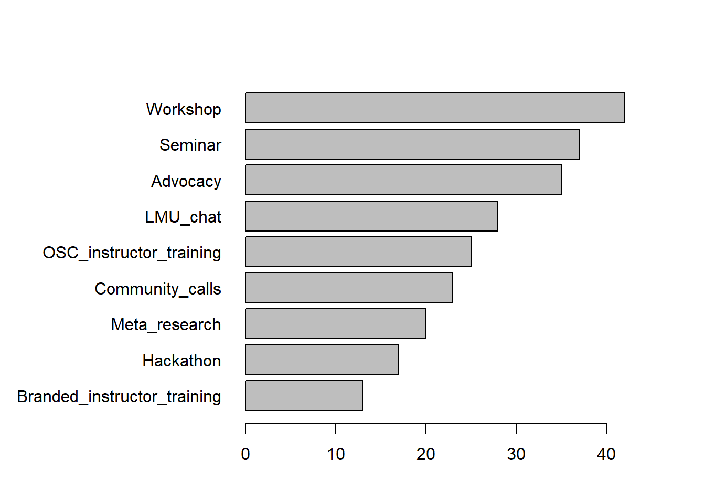
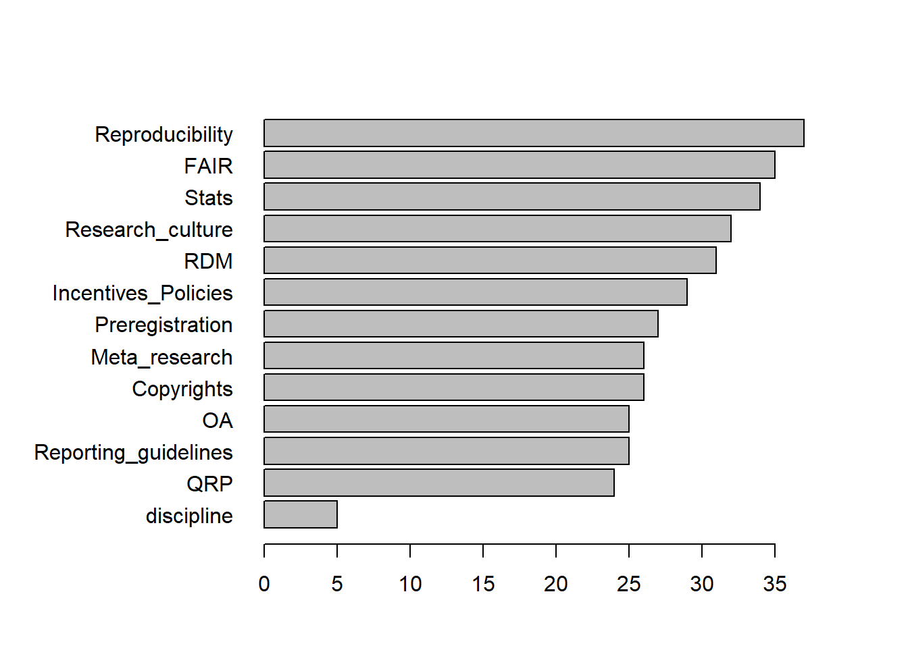
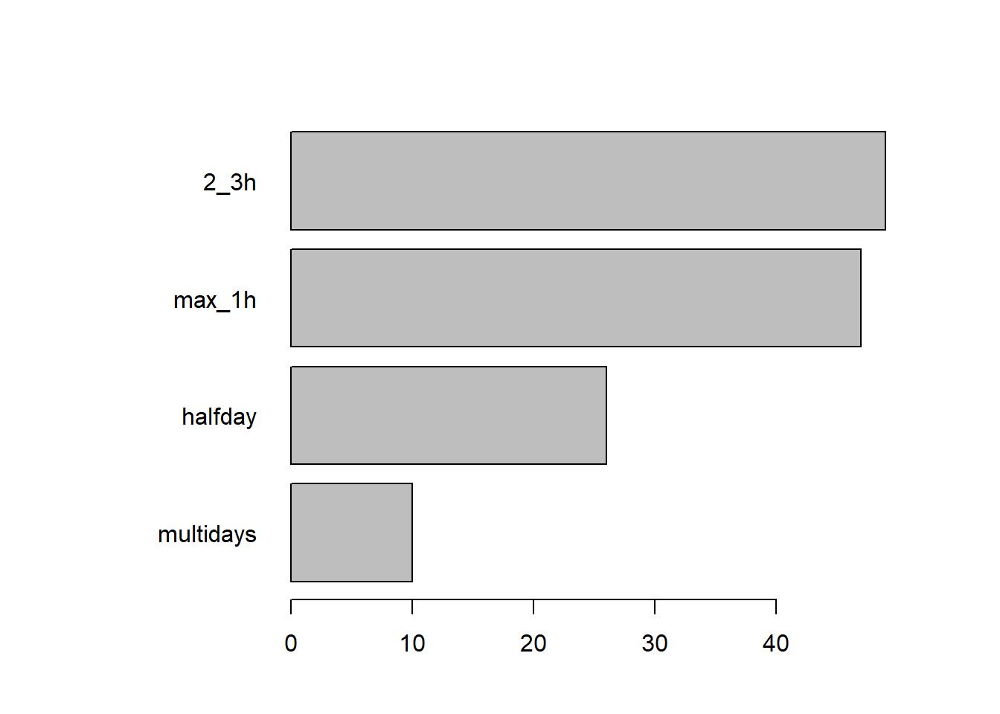

OSC survey results 17.10.2022
Descriptive statistics
Total number of participant in the OSC survey: 30
Survey Resuts
Participants
OSC affiliation
No Yes
17 13 Organisation location
Germany LMU Munich World
4 22 3 1 Discipline
1
Art, humanities, history, linguistics, and culture science
3
Biology, Chemistry, Geosciences
2
Law, Economics, Business Administration
2
Math, Statistics, Informatics, Physics
4
Medicine, Veterinary medicine
4
Social sciences, Psychology, educational sciences
14 Career stage
MSc other PhD PI Postdoc Supportstaff
2 2 9 9 4 4
Consultant
1
Doing applied research, evaluatoins and policy briefs at a federal ministry
1 Subset for OSC members only?
[1] "No"Activities
‘What activities would you like the OSC community to undertake?’

Other activities
Networking with and interface to relevant institutions outside LMU and knowledge transfer into LMU;
1 Topics
‘Which topics would you be interested to hear about in talks/workshops/seminars?’

Other topics and specific discipline
clinical studies in medicine
1
It would be important to actively involve non-empirical departments and offer low-threshold information and networking
1
communication of best practices from different disciplineswithin LMU
1 Duration
‘What length of events would you consider joining?’

Participation
‘In what way would you prefer to participate in the OSIP community?’

Other participation
< table of extent 0 >Inclusion
‘If you have any comment(s) about what would help you feel comfortable contributing (e.g., language, online vs. in-person events, synchronous vs asynchronous contributions), please indicate them here:’
[1] "I'm a very minor importance in the network, so please don't weight my answers too much. I'm more intrested in following up whta you big players do and consider important"
[2] "Hosting, facilitating a journal club, eventually some other format where e.g. we could try to reproduce the computational part of biomedical papers (sequencing, flow cytometry, etc.) "
Comments
‘If you have any other suggestions, please indicate them here:’